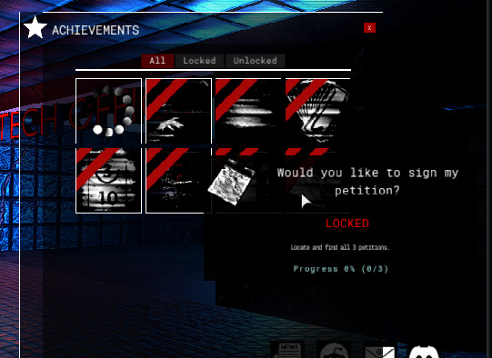
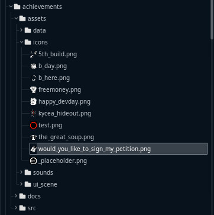

Module: achievements
Documentation last edited: November 17, 2025 at 9:00 UTC
Description

Модуль Достижений. Предоставляет базовый набор инструментов для работы с достижениями в игре.
"./assets/data"
содержат все ресурсы достижений.
Каждый ресурс ссылается на определённое изображение .PNG в
"./assets/icons"
для получения иконки:
test_name.tres ->
test_name.png
Заблокировать достижение:
Achievements.lock("test_name")
Разблокировать достижение:
Achievements.unlock("test_name")
Добавить "счётчик" в достижение:
Achievements.add_count("test_name", 1)
Все значения достижений хранятся внутри глобального класса Values, поэтому они сохраняются сразу при сохранении Values. Используются 2 словаря:
achievements_unlocked
и
achievements_counts
achievements_unlocked
- каждый ключ это кодовое имя достижения, а каждое значение это булево значение, где "true" означает разблокировано.
achievements_counts
- каждый ключ это кодовое имя достижения, а каждое значение это число, которое указывает на текущее свойство количества достижения.
Как создать достижение?
0. Создай новый ресурс
AchievementData
в
"res://modules/achievements/assets/data/"
. Ты можешь дать ему любое имя, главное чтобы оно было уникальным и служило своего рода кодовым именем. Используя имя этого файла, ты можешь управлять достижением методами lock/unlock/add_count и т.д.

1. Создай иконку для достижения и экспортируй её как .PNG в
"res://modules/achievements/assets/icons/"
. Имя файла экспортированного изображения должно соответствовать кодовому имени достижения.
2. Используй в игре. Самый простой способ: ST
st_unlock_achievement
, который может разблокировать достижение при определённом событии локации. Однако ты можешь добавить один из методов
Achievements
в код чего угодно.
Всё ещё нужен способ создания "Слушателей Достижений", которые позволят программировать сложное поведение достижений, требующее комплексных шагов для выполнения. Однако это всё пока в будущем.
General Information
Root directories list
assets, docs, src
Nodes
Achievements
AchievementUnlockedDisplay
Classes
None
Resources
Other Scripts
None